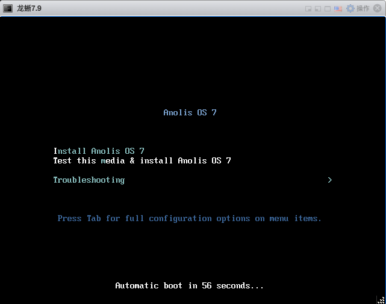
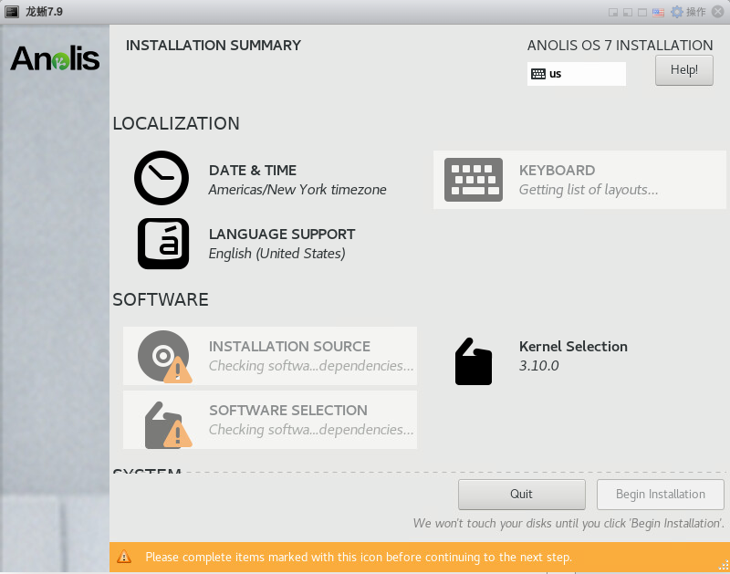
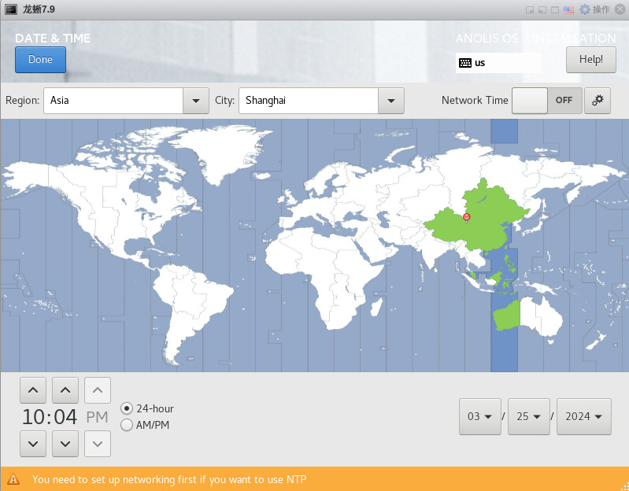
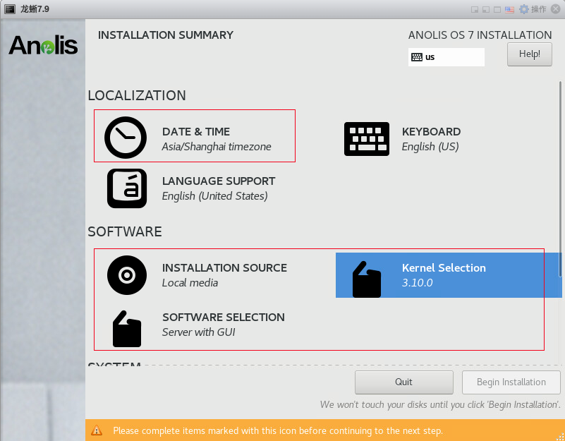
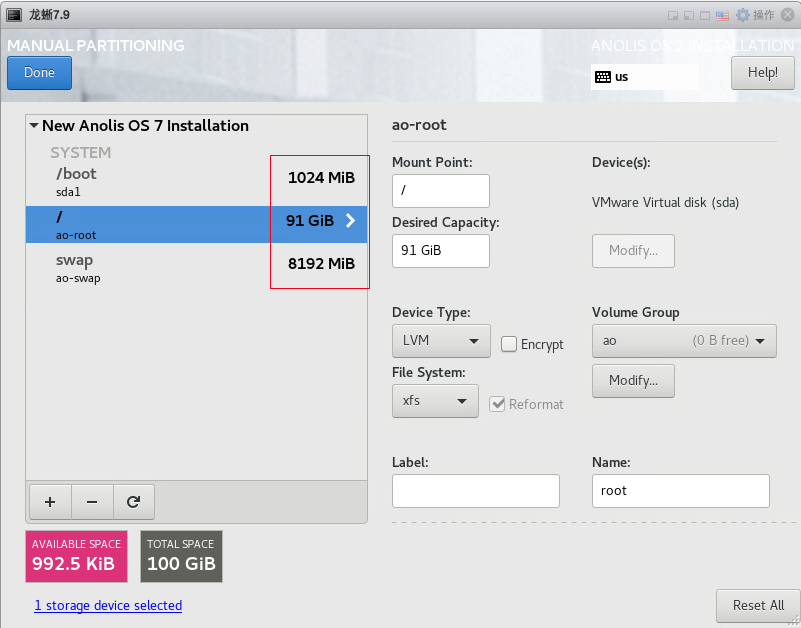
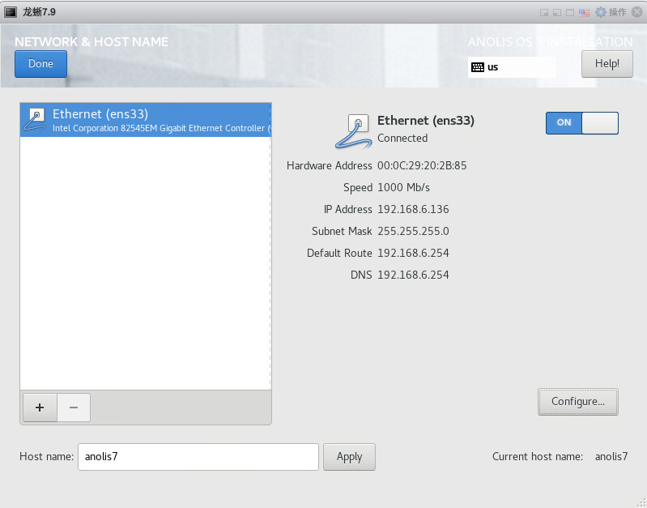
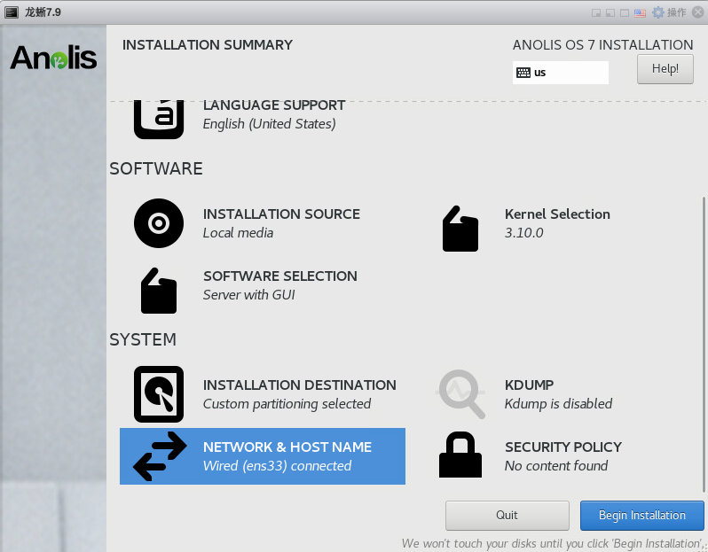
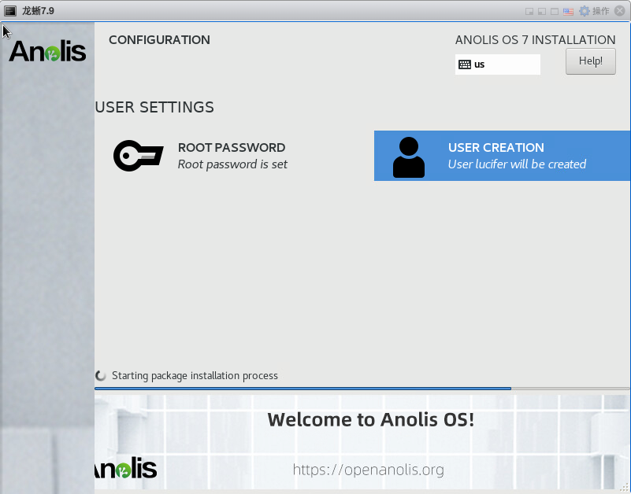

← 返回安装合集
龙蜥 Anolis OS 7.9 一键安装 Oracle 11GR2（231017）单机版
🚀 获取 OracleShellInstall 一键安装脚本
支持 Oracle 11gR2 ~ 26ai 全版本，覆盖 20+ 操作系统，单机 / ASM / RAC 三种模式一键部署。告别繁琐手动配置，让安装效率提升 10 倍。
前言
Oracle 一键安装脚本，演示 龙蜥 Anolis OS 7.9 一键安装 Oracle 11GR2（231017）单机版过程（全程无需人工干预）：（脚本包括 ORALCE PSU/OJVM 等补丁自动安装）
脚本第三代支持 N 节点一键安装，不限制节点数！

安装准备
- 1、安装好操作系统，建议安装图形化
- 2、配置好网络
- 3、挂载本地 ISO 镜像源
- 4、上传软件安装包（安装基础包，补丁包：35685663、35574075、6880880）
- 5、上传一键安装脚本：OracleShellInstall
✨ 安装包下载：前往下载中心获取 Oracle 安装包
安装 Anolis OS 7.9 系统
开启启动安装，进入安装界面：

选择英文语言：
配置时区为上海：


选择对应内核版本以及图形化安装：

配置磁盘分区：

配置主机名和网络：

开始安装：

配置 root 密码：

演示环境信息
# 主机版本
[root@anolis7 soft]# cat /etc/anolis-release
Anolis OS release 7.9
# 网络信息
[root@anolis7 soft]# ip a
2: ens33: <BROADCAST,MULTICAST,UP,LOWER_UP> mtu 1500 qdisc pfifo_fast state UP group default qlen 1000
link/ether 00:0c:29:20:2b:85 brd ff:ff:ff:ff:ff:ff
inet 192.168.6.136/24 brd 192.168.6.255 scope global noprefixroute ens33
valid_lft forever preferred_lft forever
inet6 fe80::b567:60f9:d91b:b3c1/64 scope link noprefixroute
valid_lft forever preferred_lft forever
# 挂载本地 ISO 镜像
[root@anolis7 soft]# mount | grep iso | grep -v "/run/media"
/dev/sr0 on /mnt type iso9660 (ro,relatime)
[root@anolis7 soft]# df -h|grep /mnt
/dev/sr0 8.7G 8.7G 0 100% /mnt
# 安装包存放在 /soft 目录下
[root@anolis7 ~]# cd /soft/
[root@anolis7 soft]# ll
-rwxr-xr-x 1 root root 163320 Mar 25 10:22 OracleShellInstall
-rwx------ 1 root root 1395582860 Mar 25 10:22 p13390677_112040_Linux-x86-64_1of7.zip
-rwx------ 1 root root 1151304589 Mar 25 10:22 p13390677_112040_Linux-x86-64_2of7.zip
-rwx------ 1 root root 562188912 Mar 25 10:22 p35574075_112040_Linux-x86-64.zip
-rwx------ 1 root root 86183099 Mar 25 10:22 p35685663_112040_Linux-x86-64.zip
-rwx------ 1 root root 128433424 Mar 25 10:22 p6880880_112000_Linux-x86-64.zip
-rwx------ 1 root root 321590 Mar 25 10:22 rlwrap-0.44.tar.gz
确保安装环境准备完成后，即可执行一键安装。
安装命令
使用标准生产环境安装参数：
# 根据脚本 README 或者 -h 命令提示，编辑好一键安装命令，进入 /soft 目录执行安装：
./OracleShellInstall -lf ens33 `# local ip ifname`\
-n anolis7 `# hostname`\
-op oracle `# oracle password`\
-d /u01 `# software base dir`\
-ord /oradata `# data dir`\
-o lucifer `# dbname`\
-dp oracle `# sys/system password`\
-ds AL32UTF8 `# database character`\
-ns AL16UTF16 `# national character`\
-redo 100 `# redo size`\
-opa 35574075 `# oracle PSU/RU`\
-jpa 35685663 `# OJVM PSU/RU`\
-opd Y `# optimize db`
选择需要安装的模式以及版本，即可开始安装：
安装过程
███████ ██ ████████ ██ ██ ██ ██ ██ ██ ██
██░░░░░██ ░██ ██░░░░░░ ░██ ░██ ░██░██ ░██ ░██ ░██
██ ░░██ ██████ ██████ █████ ░██ █████ ░██ ░██ █████ ░██ ░██░██ ███████ ██████ ██████ ██████ ░██ ░██
░██ ░██░░██░░█ ░░░░░░██ ██░░░██ ░██ ██░░░██░█████████░██████ ██░░░██ ░██ ░██░██░░██░░░██ ██░░░░ ░░░██░ ░░░░░░██ ░██ ░██
░██ ░██ ░██ ░ ███████ ░██ ░░ ░██░███████░░░░░░░░██░██░░░██░███████ ░██ ░██░██ ░██ ░██░░█████ ░██ ███████ ░██ ░██
░░██ ██ ░██ ██░░░░██ ░██ ██ ░██░██░░░░ ░██░██ ░██░██░░░░ ░██ ░██░██ ░██ ░██ ░░░░░██ ░██ ██░░░░██ ░██ ░██
░░███████ ░███ ░░████████░░█████ ███░░██████ ████████ ░██ ░██░░██████ ███ ███░██ ███ ░██ ██████ ░░██ ░░████████ ███ ███
░░░░░░░ ░░░ ░░░░░░░░ ░░░░░ ░░░ ░░░░░░ ░░░░░░░░ ░░ ░░ ░░░░░░ ░░░ ░░░ ░░ ░░░ ░░ ░░░░░░ ░░ ░░░░░░░░ ░░░ ░░░
请选择安装模式 [单机(si)/单机ASM(sa)/集群(rac)] : si
数据库安装模式: single
请选择数据库版本 [11/12/19/21] : 11
数据库版本: 11
#==============================================================#
配置本地 YUM 源
#==============================================================#
[server]
name=server
baseurl=file:///mnt
enabled=1
gpgcheck=0
#==============================================================#
禁用防火墙
#==============================================================#
● firewalld.service - firewalld - dynamic firewall daemon
Loaded: loaded (/usr/lib/systemd/system/firewalld.service; disabled; vendor preset: enabled)
Active: inactive (dead)
Docs: man:firewalld(1)
Mar 25 10:19:59 anolis7 systemd[1]: Starting firewalld - dynamic firewall daemon...
Mar 25 10:20:01 anolis7 systemd[1]: Started firewalld - dynamic firewall daemon.
Mar 25 10:20:01 anolis7 firewalld[947]: WARNING: AllowZoneDrifting is enabled. This is considered an insecure configuration option. It will be removed in a future release. Please consider disabling it now.
Mar 25 10:34:19 anolis7 systemd[1]: Stopping firewalld - dynamic firewall daemon...
Mar 25 10:34:20 anolis7 systemd[1]: Stopped firewalld - dynamic firewall daemon.
#==============================================================#
禁用 SELinux
#==============================================================#
SELinux status: disabled
#==============================================================#
YUM 静默安装依赖包
#==============================================================#
bc-1.06.95-13.an7.x86_64
binutils-2.27-44.base.0.1.an7.x86_64
package compat-libcap1 is not installed
gcc-4.8.5-44.0.1.an7.x86_64
gcc-c++-4.8.5-44.0.1.an7.x86_64
elfutils-libelf-0.176-5.an7.x86_64
elfutils-libelf-devel-0.176-5.an7.x86_64
glibc-2.17-323.1.an7.1.x86_64
glibc-devel-2.17-323.1.an7.1.x86_64
libaio-0.3.109-13.an7.x86_64
libaio-devel-0.3.109-13.an7.x86_64
libgcc-4.8.5-44.0.1.an7.x86_64
libstdc++-4.8.5-44.0.1.an7.x86_64
libstdc++-devel-4.8.5-44.0.1.an7.x86_64
libxcb-1.13-1.an7.x86_64
libX11-1.6.7-2.an7.x86_64
libXau-1.0.8-2.1.an7.x86_64
libXi-1.7.9-1.an7.x86_64
libXrender-0.9.10-1.an7.x86_64
make-3.82-24.an7.x86_64
net-tools-2.0-0.25.20131004git.0.1.an7.x86_64
smartmontools-7.0-2.an7.x86_64
sysstat-10.1.5-19.2.an7.x86_64
e2fsprogs-1.43.5-8.3.an7.x86_64
e2fsprogs-libs-1.43.5-8.3.an7.x86_64
unzip-6.0-21.an7.x86_64
openssh-clients-7.4p1-21.an7.x86_64
readline-6.2-11.an7.x86_64
readline-devel-6.2-11.an7.x86_64
psmisc-22.20-17.an7.x86_64
ksh-20120801-142.an7.x86_64
nfs-utils-1.3.0-0.68.an7.x86_64
tar-1.26-35.an7.x86_64
device-mapper-multipath-0.4.9-133.an7.x86_64
avahi-0.6.31-20.an7.x86_64
ntp-4.2.6p5-29.an7.2.x86_64
chrony-3.4-1.0.1.an7.x86_64
libXtst-1.2.3-1.an7.x86_64
libXrender-devel-0.9.10-1.an7.x86_64
fontconfig-devel-2.13.0-4.3.an7.x86_64
policycoreutils-2.5-34.an7.x86_64
policycoreutils-python-2.5-34.an7.x86_64
#==============================================================#
配置主机名
#==============================================================#
anolis7
#==============================================================#
配置 /etc/hosts 文件
#==============================================================#
127.0.0.1 localhost localhost.localdomain localhost4 localhost4.localdomain4
::1 localhost localhost.localdomain localhost6 localhost6.localdomain6
## OracleBegin
## Public IP
192.168.6.136 anolis7
#==============================================================#
创建用户和组
#==============================================================#
oracle 用户：
uid=54321(oracle) gid=54321(oinstall) groups=54321(oinstall),54322(dba),54323(oper),54324(backupdba),54325(dgdba),54326(kmdba),54330(racdba)
#==============================================================#
配置 Avahi-daemon 服务
#==============================================================#
● avahi-daemon.service - Avahi mDNS/DNS-SD Stack
Loaded: loaded (/usr/lib/systemd/system/avahi-daemon.service; disabled; vendor preset: enabled)
Active: inactive (dead)
Mar 25 10:20:02 anolis7 avahi-daemon[802]: Registering new address record for 192.168.6.136 on ens33.IPv4.
Mar 25 10:20:14 anolis7 avahi-daemon[802]: Joining mDNS multicast group on interface virbr0.IPv4 with address 192.168.122.1.
Mar 25 10:20:14 anolis7 avahi-daemon[802]: New relevant interface virbr0.IPv4 for mDNS.
Mar 25 10:20:14 anolis7 avahi-daemon[802]: Registering new address record for 192.168.122.1 on virbr0.IPv4.
Mar 25 10:35:02 anolis7 systemd[1]: Stopping Avahi mDNS/DNS-SD Stack...
Mar 25 10:35:02 anolis7 avahi-daemon[802]: Got SIGTERM, quitting.
Mar 25 10:35:02 anolis7 avahi-daemon[802]: Leaving mDNS multicast group on interface virbr0.IPv4 with address 192.168.122.1.
Mar 25 10:35:02 anolis7 avahi-daemon[802]: Leaving mDNS multicast group on interface ens33.IPv4 with address 192.168.6.136.
Mar 25 10:35:02 anolis7 avahi-daemon[802]: avahi-daemon 0.6.31 exiting.
Mar 25 10:35:02 anolis7 systemd[1]: Stopped Avahi mDNS/DNS-SD Stack.
#==============================================================#
配置透明大页 && NUMA && 磁盘 IO 调度器
#==============================================================#
args="ro rd.lvm.lv=ao/root rd.lvm.lv=ao/swap rhgb quiet LANG=en_US.UTF-8 numa=off transparent_hugepage=never elevator=deadline"
-rd.lvm.lv=ao/root
-args="ro
args="ro rd.lvm.lv=ao/root rd.lvm.lv=ao/swap rhgb quiet numa=off transparent_hugepage=never elevator=deadline"
-elevator=deadline"
-transparent_hugepage=never
#==============================================================#
配置 sysctl.conf
#==============================================================#
fs.aio-max-nr = 1048576
fs.file-max = 6815744
kernel.shmall = 2097152
kernel.shmmax = 8369385471
kernel.shmmni = 4096
kernel.sem = 250 32000 100 128
net.ipv4.ip_local_port_range = 9000 65500
net.core.rmem_default = 262144
net.core.rmem_max = 4194304
net.core.wmem_default = 262144
net.core.wmem_max = 1048576
vm.min_free_kbytes = 32692
net.ipv4.conf.ens33.rp_filter = 1
vm.swappiness = 10
kernel.panic_on_oops = 1
kernel.randomize_va_space = 2
kernel.numa_balancing = 0
#==============================================================#
配置 nsysctl.conf
#==============================================================#
NOZEROCONF=yes
#==============================================================#
配置 RemoveIPC
#==============================================================#
[Login]
RemoveIPC=no
#==============================================================#
配置 /etc/security/limits.conf 和 /etc/pam.d/login
#==============================================================#
查看 /etc/security/limits.conf：
oracle soft nofile 1024
oracle hard nofile 65536
oracle soft stack 10240
oracle hard stack 32768
oracle soft nproc 2047
oracle hard nproc 16384
oracle hard memlock unlimited
oracle soft memlock unlimited
查看 /etc/pam.d/login 文件：
auth [user_unknown=ignore success=ok ignore=ignore default=bad] pam_securetty.so
auth substack system-auth
auth include postlogin
account required pam_nologin.so
account include system-auth
password include system-auth
session required pam_selinux.so close
session required pam_loginuid.so
session optional pam_console.so
session required pam_selinux.so open
session required pam_namespace.so
session optional pam_keyinit.so force revoke
session include system-auth
session include postlogin
-session optional pam_ck_connector.so
session required pam_limits.so
session required /lib64/security/pam_limits.so
#==============================================================#
配置 /dev/shm
#==============================================================#
/dev/mapper/ao-root / xfs defaults 0 0
UUID=79be3cae-ac3c-4662-a538-71d3285f3db5 /boot xfs defaults 0 0
/dev/mapper/ao-swap swap swap defaults 0 0
tmpfs /dev/shm tmpfs size=8173228k 0 0
#==============================================================#
安装 rlwrap 插件
#==============================================================#
成功安装 rlwrap： rlwrap 0.44
#==============================================================#
Root 用户环境变量
#==============================================================#
if [ -f ~/.bashrc ]; then
. ~/.bashrc
fi
PATH=$PATH:$HOME/bin
export PATH
alias so='su - oracle'
export PS1="[`whoami`@`hostname`:"'$PWD]$ '
#==============================================================#
Oracle 用户环境变量
#==============================================================#
if [ -f ~/.bashrc ]; then
. ~/.bashrc
fi
PATH=$PATH:$HOME/.local/bin:$HOME/bin
export PATH
umask 022
export TMP=/tmp
export TMPDIR=$TMP
export NLS_LANG=AMERICAN_AMERICA.AL32UTF8
export ORACLE_BASE=/u01/app/oracle
export ORACLE_HOME=/u01/app/oracle/product/11.2.0/db
export ORACLE_TERM=xterm
export TNS_ADMIN=$ORACLE_HOME/network/admin
export LD_LIBRARY_PATH=$ORACLE_HOME/lib:/lib:/usr/lib
export ORACLE_SID=lucifer
export PATH=/usr/sbin:$PATH
export PATH=$ORACLE_HOME/bin:$ORACLE_HOME/OPatch:$ORACLE_HOME/perl/bin:$PATH
export PERL5LIB=$ORACLE_HOME/perl/lib
alias sas='sqlplus / as sysdba'
alias awr='sqlplus / as sysdba @?/rdbms/admin/awrrpt'
alias ash='sqlplus / as sysdba @?/rdbms/admin/ashrpt'
alias alert='vi $ORACLE_BASE/diag/rdbms/*/$ORACLE_SID/trace/alert_$ORACLE_SID.log'
export PS1="[`whoami`@`hostname`:"'$PWD]$ '
alias sqlplus='rlwrap sqlplus'
alias rman='rlwrap rman'
alias adrci='rlwrap adrci'
#==============================================================#
静默解压 Oracle 软件包
#==============================================================#
正在静默解压缩 Oracle 软件包，请稍等：
.---- -. -. . . . .
( .',----- - - ' ' ' __
\_/ ;--:- __--------------------___ ____=========_||___
__U__n_^_''__[. ooo___ | |_!_||_!_||_!_||_!_| | |..|_i_|..|_i_|..|
c(_ ..(_ ..(_ ..( /,,,,,,] | |___||___||___||___| | | |
,_\___________'_|,L______],|______________________|_i,!________________!_i
/;_(@)(@)==(@)(@) (o)(o) (o)^(o)--(o)^(o) (o)(o)-(o)(o)
""~"""~"""~"""~"""~"""~"""~"""~"""~"""~"""~"""~"""~"""~"""~"""~"""~"""~"""~"""~"'""
静默解压 Oracle 软件安装包： /soft/p13390677_112040_Linux-x86-64_1of7.zip,/soft/p13390677_112040_Linux-x86-64_2of7.zip
静默解压 Oracle 软件补丁包： /soft/p35574075*.zip
静默解压 OJVM 软件补丁包： /soft/p35685663*.zip
#==============================================================#
Oracle 安装静默文件
#==============================================================#
oracle.install.option=INSTALL_DB_SWONLY
UNIX_GROUP_NAME=oinstall
INVENTORY_LOCATION=/u01/app/oraInventory
ORACLE_BASE=/u01/app/oracle
oracle.install.db.InstallEdition=EE
oracle.install.db.DBA_GROUP=dba
oracle.install.db.OPER_GROUP=oper
oracle.install.responseFileVersion=/oracle/install/rspfmt_dbinstall_response_schema_v11_2_0
SELECTED_LANGUAGES=en,zh_CN
ORACLE_HOME=/u01/app/oracle/product/11.2.0/db
DECLINE_SECURITY_UPDATES=true
oracle.installer.autoupdates.option=SKIP_UPDATES
#==============================================================#
静默安装数据库软件
#==============================================================#
Starting Oracle Universal Installer...
Checking Temp space: must be greater than 120 MB. Actual 81349 MB Passed
Checking swap space: must be greater than 150 MB. Actual 8191 MB Passed
Preparing to launch Oracle Universal Installer from /tmp/OraInstall2024-03-25_10-36-35AM. Please wait ...You can find the log of this install session at:
/u01/app/oraInventory/logs/installActions2024-03-25_10-36-35AM.log
Prepare in progress.
.................................................. 9% Done.
Prepare successful.
Copy files in progress.
.................................................. 14% Done.
.................................................. 20% Done.
.................................................. 26% Done.
.................................................. 31% Done.
.................................................. 36% Done.
.................................................. 41% Done.
.................................................. 47% Done.
.................................................. 52% Done.
.................................................. 57% Done.
.................................................. 63% Done.
.................................................. 68% Done.
.................................................. 73% Done.
.................................................. 78% Done.
.................................................. 83% Done.
..............................
Copy files successful.
Link binaries in progress.
..........
Link binaries successful.
Setup files in progress.
.................................................. 88% Done.
.................................................. 94% Done.
Setup files successful.
The installation of Oracle Database 11g was successful.
Please check '/u01/app/oraInventory/logs/silentInstall2024-03-25_10-36-35AM.log' for more details.
Execute Root Scripts in progress.
As a root user, execute the following script(s):
1. /u01/app/oraInventory/orainstRoot.sh
2. /u01/app/oracle/product/11.2.0/db/root.sh
.................................................. 100% Done.
Execute Root Scripts successful.
Successfully Setup Software.
#==============================================================#
执行 root 脚本
#==============================================================#
Changing permissions of /u01/app/oraInventory.
Adding read,write permissions for group.
Removing read,write,execute permissions for world.
Changing groupname of /u01/app/oraInventory to oinstall.
The execution of the script is complete.
Check /u01/app/oracle/product/11.2.0/db/install/root_anolis7_2024-03-25_10-40-11.log for the output of root script
#==============================================================#
Oracle 软件安装补丁
#==============================================================#
Oracle Interim Patch Installer version 11.2.0.3.44
Copyright (c) 2024, Oracle Corporation. All rights reserved.
PREREQ session
Oracle Home : /u01/app/oracle/product/11.2.0/db
Central Inventory : /u01/app/oraInventory
from : /u01/app/oracle/product/11.2.0/db/oraInst.loc
OPatch version : 11.2.0.3.44
OUI version : 11.2.0.4.0
Log file location : /u01/app/oracle/product/11.2.0/db/cfgtoollogs/opatch/opatch2024-03-25_10-40-17AM_1.log
Invoking prereq "checkconflictagainstohwithdetail"
Prereq "checkConflictAgainstOHWithDetail" passed.
OPatch succeeded.
Oracle Interim Patch Installer version 11.2.0.3.44
Copyright (c) 2024, Oracle Corporation. All rights reserved.
Oracle Home : /u01/app/oracle/product/11.2.0/db
Central Inventory : /u01/app/oraInventory
from : /u01/app/oracle/product/11.2.0/db/oraInst.loc
OPatch version : 11.2.0.3.44
OUI version : 11.2.0.4.0
Log file location : /u01/app/oracle/product/11.2.0/db/cfgtoollogs/opatch/opatch2024-03-25_10-40-21AM_1.log
Verifying environment and performing prerequisite checks...
OPatch continues with these patches: 17478514 18031668 18522509 19121551 19769489 20299013 20760982 21352635 21948347 22502456 23054359 24006111 24732075 25869727 26609445 26392168 26925576 27338049 27734982 28204707 28729262 29141056 29497421 29913194 30298532 30670774 31103343 31537677 31983472 32328626 32758711 33128584 33477185 33711103 34057724 34386237 34677698 34998337 35269283 35574075
Do you want to proceed? [y|n]
Y (auto-answered by -silent)
User Responded with: Y
All checks passed.
Please shutdown Oracle instances running out of this ORACLE_HOME on the local system.
(Oracle Home = '/u01/app/oracle/product/11.2.0/db')
Is the local system ready for patching? [y|n]
Y (auto-answered by -silent)
User Responded with: Y
Backing up files...
Applying sub-patch '17478514' to OH '/u01/app/oracle/product/11.2.0/db'
Patching component oracle.rdbms, 11.2.0.4.0...
Patching component oracle.rdbms.rsf, 11.2.0.4.0...
Patching component oracle.sdo, 11.2.0.4.0...
Patching component oracle.sysman.agent, 10.2.0.4.5...
Patching component oracle.xdk, 11.2.0.4.0...
Patching component oracle.rdbms.dbscripts, 11.2.0.4.0...
Patching component oracle.sdo.locator, 11.2.0.4.0...
Patching component oracle.nlsrtl.rsf, 11.2.0.4.0...
Patching component oracle.xdk.rsf, 11.2.0.4.0...
Patching component oracle.rdbms.rman, 11.2.0.4.0...
Applying sub-patch '18031668' to OH '/u01/app/oracle/product/11.2.0/db'
Patching component oracle.rdbms, 11.2.0.4.0...
Patching component oracle.rdbms.rsf, 11.2.0.4.0...
Patching component oracle.ldap.rsf, 11.2.0.4.0...
Patching component oracle.rdbms.crs, 11.2.0.4.0...
Patching component oracle.precomp.common, 11.2.0.4.0...
Patching component oracle.ldap.rsf.ic, 11.2.0.4.0...
Patching component oracle.rdbms.deconfig, 11.2.0.4.0...
Patching component oracle.rdbms.dbscripts, 11.2.0.4.0...
Patching component oracle.rdbms.rman, 11.2.0.4.0...
Applying sub-patch '18522509' to OH '/u01/app/oracle/product/11.2.0/db'
Patching component oracle.rdbms.rsf, 11.2.0.4.0...
Patching component oracle.rdbms, 11.2.0.4.0...
Patching component oracle.precomp.common, 11.2.0.4.0...
Patching component oracle.rdbms.rman, 11.2.0.4.0...
Patching component oracle.rdbms.dbscripts, 11.2.0.4.0...
Patching component oracle.rdbms.deconfig, 11.2.0.4.0...
Applying sub-patch '19121551' to OH '/u01/app/oracle/product/11.2.0/db'
Patching component oracle.precomp.common, 11.2.0.4.0...
Patching component oracle.sysman.console.db, 11.2.0.4.0...
Patching component oracle.rdbms.rsf, 11.2.0.4.0...
Patching component oracle.rdbms.rman, 11.2.0.4.0...
Patching component oracle.rdbms, 11.2.0.4.0...
Patching component oracle.rdbms.dbscripts, 11.2.0.4.0...
Patching component oracle.ordim.client, 11.2.0.4.0...
Patching component oracle.ordim.jai, 11.2.0.4.0...
Applying sub-patch '19769489' to OH '/u01/app/oracle/product/11.2.0/db'
ApplySession: Optional component(s) [ oracle.sysman.agent, 11.2.0.4.0 ] not present in the Oracle Home or a higher version is found.
Patching component oracle.precomp.common, 11.2.0.4.0...
Patching component oracle.ovm, 11.2.0.4.0...
Patching component oracle.xdk, 11.2.0.4.0...
Patching component oracle.rdbms.util, 11.2.0.4.0...
Patching component oracle.rdbms, 11.2.0.4.0...
Patching component oracle.rdbms.dbscripts, 11.2.0.4.0...
Patching component oracle.xdk.parser.java, 11.2.0.4.0...
Patching component oracle.oraolap, 11.2.0.4.0...
Patching component oracle.rdbms.rsf, 11.2.0.4.0...
Patching component oracle.xdk.rsf, 11.2.0.4.0...
Patching component oracle.rdbms.rman, 11.2.0.4.0...
Patching component oracle.rdbms.deconfig, 11.2.0.4.0...
Applying sub-patch '20299013' to OH '/u01/app/oracle/product/11.2.0/db'
Patching component oracle.rdbms.dv, 11.2.0.4.0...
Patching component oracle.rdbms.oci, 11.2.0.4.0...
Patching component oracle.precomp.common, 11.2.0.4.0...
Patching component oracle.sysman.agent, 10.2.0.4.5...
Patching component oracle.xdk, 11.2.0.4.0...
Patching component oracle.sysman.common, 10.2.0.4.5...
Patching component oracle.rdbms, 11.2.0.4.0...
Patching component oracle.rdbms.dbscripts, 11.2.0.4.0...
Patching component oracle.xdk.parser.java, 11.2.0.4.0...
Patching component oracle.sysman.console.db, 11.2.0.4.0...
Patching component oracle.xdk.rsf, 11.2.0.4.0...
Patching component oracle.rdbms.rsf, 11.2.0.4.0...
Patching component oracle.sysman.common.core, 10.2.0.4.5...
Patching component oracle.rdbms.rman, 11.2.0.4.0...
Patching component oracle.rdbms.deconfig, 11.2.0.4.0...
Applying sub-patch '20760982' to OH '/u01/app/oracle/product/11.2.0/db'
Patching component oracle.sysman.console.db, 11.2.0.4.0...
Patching component oracle.rdbms, 11.2.0.4.0...
Patching component oracle.rdbms.dbscripts, 11.2.0.4.0...
Patching component oracle.rdbms.rsf, 11.2.0.4.0...
Applying sub-patch '21352635' to OH '/u01/app/oracle/product/11.2.0/db'
Patching component oracle.sysman.agent, 10.2.0.4.5...
Patching component oracle.rdbms.rsf, 11.2.0.4.0...
Patching component oracle.rdbms.rman, 11.2.0.4.0...
Patching component oracle.rdbms, 11.2.0.4.0...
Applying sub-patch '21948347' to OH '/u01/app/oracle/product/11.2.0/db'
ApplySession: Optional component(s) [ oracle.tfa, 11.2.0.4.0 ] not present in the Oracle Home or a higher version is found.
Patching component oracle.sysman.agent, 10.2.0.4.5...
Patching component oracle.ovm, 11.2.0.4.0...
Patching component oracle.xdk, 11.2.0.4.0...
Patching component oracle.rdbms, 11.2.0.4.0...
Patching component oracle.nlsrtl.rsf, 11.2.0.4.0...
Patching component oracle.xdk.parser.java, 11.2.0.4.0...
Patching component oracle.sysman.console.db, 11.2.0.4.0...
Patching component oracle.xdk.rsf, 11.2.0.4.0...
Patching component oracle.rdbms.rsf, 11.2.0.4.0...
Patching component oracle.sysman.oms.core, 10.2.0.4.5...
Applying sub-patch '22502456' to OH '/u01/app/oracle/product/11.2.0/db'
ApplySession: Optional component(s) [ oracle.tfa, 11.2.0.4.0 ] not present in the Oracle Home or a higher version is found.
Patching component oracle.precomp.common, 11.2.0.4.0...
Patching component oracle.oraolap.dbscripts, 11.2.0.4.0...
Patching component oracle.rdbms.olap, 11.2.0.4.0...
Patching component oracle.oraolap, 11.2.0.4.0...
Patching component oracle.rdbms.rsf, 11.2.0.4.0...
Patching component oracle.rdbms.rman, 11.2.0.4.0...
Patching component oracle.rdbms, 11.2.0.4.0...
Patching component oracle.rdbms.dbscripts, 11.2.0.4.0...
Applying sub-patch '23054359' to OH '/u01/app/oracle/product/11.2.0/db'
Patching component oracle.rdbms.dv, 11.2.0.4.0...
Patching component oracle.rdbms, 11.2.0.4.0...
Patching component oracle.rdbms.dbscripts, 11.2.0.4.0...
Patching component oracle.rdbms.rsf, 11.2.0.4.0...
Applying sub-patch '24006111' to OH '/u01/app/oracle/product/11.2.0/db'
Patching component oracle.sqlplus.ic, 11.2.0.4.0...
Patching component oracle.sqlplus, 11.2.0.4.0...
Patching component oracle.rdbms.rsf, 11.2.0.4.0...
Patching component oracle.rdbms, 11.2.0.4.0...
Patching component oracle.rdbms.dbscripts, 11.2.0.4.0...
Applying sub-patch '24732075' to OH '/u01/app/oracle/product/11.2.0/db'
Patching component oracle.precomp.common, 11.2.0.4.0...
Patching component oracle.sysman.plugin.db.main.agent, 11.2.0.4.0...
Patching component oracle.sqlplus.ic, 11.2.0.4.0...
Patching component oracle.sqlplus, 11.2.0.4.0...
Patching component oracle.rdbms.rsf, 11.2.0.4.0...
Patching component oracle.rdbms, 11.2.0.4.0...
Patching component oracle.rdbms.util, 11.2.0.4.0...
Patching component oracle.ordim.client, 11.2.0.4.0...
Patching component oracle.ordim.jai, 11.2.0.4.0...
Patching component oracle.ordim.server, 11.2.0.4.0...
Applying sub-patch '25869727' to OH '/u01/app/oracle/product/11.2.0/db'
ApplySession: Optional component(s) [ oracle.oid.client, 11.2.0.4.0 ] not present in the Oracle Home or a higher version is found.
Patching component oracle.ldap.rsf, 11.2.0.4.0...
Patching component oracle.oracore.rsf, 11.2.0.4.0...
Patching component oracle.rdbms, 11.2.0.4.0...
Patching component oracle.rdbms.rsf, 11.2.0.4.0...
Patching component oracle.rdbms.rman, 11.2.0.4.0...
Applying sub-patch '26609445' to OH '/u01/app/oracle/product/11.2.0/db'
Patching component oracle.oracore.rsf, 11.2.0.4.0...
Patching component oracle.rdbms, 11.2.0.4.0...
Applying sub-patch '26392168' to OH '/u01/app/oracle/product/11.2.0/db'
ApplySession: Optional component(s) [ oracle.oid.client, 11.2.0.4.0 ] not present in the Oracle Home or a higher version is found.
Patching component oracle.network.rsf, 11.2.0.4.0...
Patching component oracle.ldap.client, 11.2.0.4.0...
Patching component oracle.sysman.agent, 10.2.0.4.5...
Patching component oracle.xdk, 11.2.0.4.0...
Patching component oracle.rdbms, 11.2.0.4.0...
Patching component oracle.network.listener, 11.2.0.4.0...
Patching component oracle.rdbms.dbscripts, 11.2.0.4.0...
Patching component oracle.nlsrtl.rsf, 11.2.0.4.0...
Patching component oracle.xdk.parser.java, 11.2.0.4.0...
Patching component oracle.xdk.rsf, 11.2.0.4.0...
Patching component oracle.rdbms.rsf, 11.2.0.4.0...
Patching component oracle.rdbms.rman, 11.2.0.4.0...
Applying sub-patch '26925576' to OH '/u01/app/oracle/product/11.2.0/db'
Patching component oracle.rdbms, 11.2.0.4.0...
Patching component oracle.rdbms.dbscripts, 11.2.0.4.0...
Patching component oracle.rdbms.rman, 11.2.0.4.0...
Patching component oracle.rdbms.rsf, 11.2.0.4.0...
Applying sub-patch '27338049' to OH '/u01/app/oracle/product/11.2.0/db'
Patching component oracle.assistants.server, 11.2.0.4.0...
Patching component oracle.rdbms.rsf, 11.2.0.4.0...
Patching component oracle.rdbms, 11.2.0.4.0...
Patching component oracle.rdbms.rman, 11.2.0.4.0...
Patching component oracle.rdbms.dbscripts, 11.2.0.4.0...
Applying sub-patch '27734982' to OH '/u01/app/oracle/product/11.2.0/db'
Patching component oracle.ctx, 11.2.0.4.0...
Patching component oracle.rdbms.rsf, 11.2.0.4.0...
Patching component oracle.ctx.rsf, 11.2.0.4.0...
Patching component oracle.rdbms, 11.2.0.4.0...
Patching component oracle.rdbms.rman, 11.2.0.4.0...
Applying sub-patch '28204707' to OH '/u01/app/oracle/product/11.2.0/db'
Applying changes to emctl script on the home: /u01/app/oracle/product/11.2.0/db ...
Patching component oracle.rdbms, 11.2.0.4.0...
Patching component oracle.oracore.rsf, 11.2.0.4.0...
Patching component oracle.rdbms.rsf, 11.2.0.4.0...
Patching component oracle.ldap.rsf, 11.2.0.4.0...
Patching component oracle.ldap.rsf.ic, 11.2.0.4.0...
Patching component oracle.network.rsf, 11.2.0.4.0...
Patching component oracle.sysman.agent, 10.2.0.4.5...
Patching component oracle.sysman.console.db, 11.2.0.4.0...
Patching component oracle.ldap.security.osdt, 11.2.0.4.0...
Patching component oracle.ldap.owm, 11.2.0.4.0...
Patching component oracle.sqlplus.rsf, 11.2.0.4.0...
Patching component oracle.ctx, 11.2.0.4.0...
Applying sub-patch '28729262' to OH '/u01/app/oracle/product/11.2.0/db'
INFO: Script isn't applicable to this port!
Patching component oracle.rdbms, 11.2.0.4.0...
Patching component oracle.rdbms.rsf, 11.2.0.4.0...
Patching component oracle.rdbms.util, 11.2.0.4.0...
Patching component oracle.ldap.rsf, 11.2.0.4.0...
Patching component oracle.ldap.rsf.ic, 11.2.0.4.0...
Patching component oracle.network.rsf, 11.2.0.4.0...
Patching component oracle.rdbms.rman, 11.2.0.4.0...
Patching component oracle.ctx, 11.2.0.4.0...
Applying sub-patch '29141056' to OH '/u01/app/oracle/product/11.2.0/db'
Patching component oracle.rdbms, 11.2.0.4.0...
Patching component oracle.rdbms.rman, 11.2.0.4.0...
Patching component oracle.oracore.rsf, 11.2.0.4.0...
Patching component oracle.rdbms.dbscripts, 11.2.0.4.0...
Patching component oracle.rdbms.rsf, 11.2.0.4.0...
Applying sub-patch '29497421' to OH '/u01/app/oracle/product/11.2.0/db'
Patching component oracle.rdbms, 11.2.0.4.0...
Patching component oracle.rdbms.dbscripts, 11.2.0.4.0...
Patching component oracle.rdbms.rman, 11.2.0.4.0...
Patching component oracle.rdbms.rsf, 11.2.0.4.0...
Patching component oracle.ldap.rsf, 11.2.0.4.0...
Patching component oracle.ldap.rsf.ic, 11.2.0.4.0...
Patching component oracle.oracore.rsf, 11.2.0.4.0...
Patching component oracle.ctx, 11.2.0.4.0...
Applying sub-patch '29913194' to OH '/u01/app/oracle/product/11.2.0/db'
Patching component oracle.rdbms, 11.2.0.4.0...
Patching component oracle.rdbms.dbscripts, 11.2.0.4.0...
Patching component oracle.rdbms.rsf, 11.2.0.4.0...
Patching component oracle.network.rsf, 11.2.0.4.0...
Patching component oracle.ldap.rsf, 11.2.0.4.0...
Patching component oracle.ldap.rsf.ic, 11.2.0.4.0...
Patching component oracle.rdbms.util, 11.2.0.4.0...
Applying sub-patch '30298532' to OH '/u01/app/oracle/product/11.2.0/db'
ApplySession: Optional component(s) [ oracle.rdbms.tg4tera, 11.2.0.4.0 ] , [ oracle.rdbms.tg4sybs, 11.2.0.4.0 ] , [ oracle.rdbms.tg4ifmx, 11.2.0.4.0 ] , [ oracle.rdbms.tg4db2, 11.2.0.4.0 ] , [ oracle.rdbms.tg4msql, 11.2.0.4.0 ] not present in the Oracle Home or a higher version is found.
Patching component oracle.rdbms.rsf, 11.2.0.4.0...
Patching component oracle.rdbms, 11.2.0.4.0...
Patching component oracle.rdbms.dbscripts, 11.2.0.4.0...
Patching component oracle.rdbms.hsodbc, 11.2.0.4.0...
Patching component oracle.ldap.rsf, 11.2.0.4.0...
Patching component oracle.ldap.rsf.ic, 11.2.0.4.0...
Applying sub-patch '30670774' to OH '/u01/app/oracle/product/11.2.0/db'
Patching component oracle.rdbms.rsf, 11.2.0.4.0...
Patching component oracle.rdbms, 11.2.0.4.0...
Patching component oracle.rdbms.dbscripts, 11.2.0.4.0...
Patching component oracle.network.rsf, 11.2.0.4.0...
Patching component oracle.ldap.rsf, 11.2.0.4.0...
Patching component oracle.ldap.rsf.ic, 11.2.0.4.0...
Patching component oracle.swd.oui, 11.2.0.4.0...
Patching component oracle.ctx, 11.2.0.4.0...
Applying sub-patch '31103343' to OH '/u01/app/oracle/product/11.2.0/db'
Patching component oracle.rdbms, 11.2.0.4.0...
Patching component oracle.rdbms.dbscripts, 11.2.0.4.0...
Patching component oracle.rdbms.rsf, 11.2.0.4.0...
Applying sub-patch '31537677' to OH '/u01/app/oracle/product/11.2.0/db'
Patching component oracle.rdbms, 11.2.0.4.0...
Patching component oracle.rdbms.dbscripts, 11.2.0.4.0...
Patching component oracle.rdbms.rsf, 11.2.0.4.0...
Patching component oracle.rdbms.dv, 11.2.0.4.0...
Patching component oracle.rdbms.rman, 11.2.0.4.0...
Patching component oracle.ldap.rsf, 11.2.0.4.0...
Patching component oracle.ldap.rsf.ic, 11.2.0.4.0...
Patching component oracle.oracore.rsf, 11.2.0.4.0...
Patching component oracle.rdbms.util, 11.2.0.4.0...
Patching component oracle.dbdev, 11.2.0.4.0...
Patching component oracle.ctx, 11.2.0.4.0...
Patching component oracle.buildtools.rsf, 11.2.0.4.0...
Applying sub-patch '31983472' to OH '/u01/app/oracle/product/11.2.0/db'
Patching component oracle.rdbms.rsf, 11.2.0.4.0...
Patching component oracle.rdbms, 11.2.0.4.0...
Patching component oracle.ctx, 11.2.0.4.0...
Applying sub-patch '32328626' to OH '/u01/app/oracle/product/11.2.0/db'
Patching component oracle.rdbms, 11.2.0.4.0...
Patching component oracle.rdbms.dbscripts, 11.2.0.4.0...
Patching component oracle.rdbms.rsf, 11.2.0.4.0...
Patching component oracle.rdbms.dv, 11.2.0.4.0...
Patching component oracle.rdbms.rman, 11.2.0.4.0...
Patching component oracle.ldap.rsf, 11.2.0.4.0...
Patching component oracle.ldap.rsf.ic, 11.2.0.4.0...
Applying sub-patch '32758711' to OH '/u01/app/oracle/product/11.2.0/db'
Patching component oracle.rdbms, 11.2.0.4.0...
Patching component oracle.rdbms.dbscripts, 11.2.0.4.0...
Patching component oracle.ctx, 11.2.0.4.0...
Patching component oracle.network.rsf, 11.2.0.4.0...
Applying sub-patch '33128584' to OH '/u01/app/oracle/product/11.2.0/db'
Patching component oracle.rdbms, 11.2.0.4.0...
Patching component oracle.rdbms.rsf, 11.2.0.4.0...
Patching component oracle.ctx, 11.2.0.4.0...
Applying sub-patch '33477185' to OH '/u01/app/oracle/product/11.2.0/db'
Patching component oracle.rdbms, 11.2.0.4.0...
Patching component oracle.rdbms.dbscripts, 11.2.0.4.0...
Patching component oracle.rdbms.rsf, 11.2.0.4.0...
Patching component oracle.network.rsf, 11.2.0.4.0...
Patching component oracle.rdbms.dv, 11.2.0.4.0...
Applying sub-patch '33711103' to OH '/u01/app/oracle/product/11.2.0/db'
ApplySession: Optional component(s) [ oracle.rdbms.tg4tera, 11.2.0.4.0 ] , [ oracle.rdbms.tg4sybs, 11.2.0.4.0 ] , [ oracle.rdbms.tg4msql, 11.2.0.4.0 ] , [ oracle.rdbms.tg4ifmx, 11.2.0.4.0 ] , [ oracle.rdbms.tg4db2, 11.2.0.4.0 ] not present in the Oracle Home or a higher version is found.
Patching component oracle.rdbms.rsf, 11.2.0.4.0...
Patching component oracle.rdbms, 11.2.0.4.0...
Patching component oracle.rdbms.rsf, 11.2.0.4.0...
Patching component oracle.network.rsf, 11.2.0.4.0...
Patching component oracle.rdbms.hsodbc, 11.2.0.4.0...
Patching component oracle.rdbms.hs_common, 11.2.0.4.0...
Patching component oracle.buildtools.rsf, 11.2.0.4.0...
Patching component oracle.buildtools.rsf, 11.2.0.4.0...
Applying sub-patch '34057724' to OH '/u01/app/oracle/product/11.2.0/db'
ApplySession: Optional component(s) [ oracle.network.cman, 11.2.0.4.0 ] not present in the Oracle Home or a higher version is found.
Patching component oracle.rdbms, 11.2.0.4.0...
Patching component oracle.rdbms.dbscripts, 11.2.0.4.0...
Patching component oracle.rdbms.rsf, 11.2.0.4.0...
Patching component oracle.network.rsf, 11.2.0.4.0...
Patching component oracle.ldap.rsf, 11.2.0.4.0...
Patching component oracle.ldap.rsf.ic, 11.2.0.4.0...
Patching component oracle.swd.oui.core, 11.2.0.4.0...
Applying sub-patch '34386237' to OH '/u01/app/oracle/product/11.2.0/db'
ApplySession: Optional component(s) [ oracle.network.cman, 11.2.0.4.0 ] not present in the Oracle Home or a higher version is found.
Patching component oracle.rdbms, 11.2.0.4.0...
Patching component oracle.rdbms.rsf, 11.2.0.4.0...
Patching component oracle.network.rsf, 11.2.0.4.0...
Patching component oracle.swd.oui.core, 11.2.0.4.0...
Patching component oracle.ctx, 11.2.0.4.0...
Applying sub-patch '34677698' to OH '/u01/app/oracle/product/11.2.0/db'
ApplySession: Optional component(s) [ oracle.network.cman, 11.2.0.4.0 ] not present in the Oracle Home or a higher version is found.
Patching component oracle.rdbms, 11.2.0.4.0...
Patching component oracle.rdbms.rsf, 11.2.0.4.0...
Patching component oracle.javavm.containers, 11.2.0.4.0...
Applying sub-patch '34998337' to OH '/u01/app/oracle/product/11.2.0/db'
ApplySession: Optional component(s) [ oracle.network.cman, 11.2.0.4.0 ] not present in the Oracle Home or a higher version is found.
Patching component oracle.rdbms, 11.2.0.4.0...
Patching component oracle.rdbms.rsf, 11.2.0.4.0...
Applying sub-patch '35269283' to OH '/u01/app/oracle/product/11.2.0/db'
ApplySession: Optional component(s) [ oracle.network.cman, 11.2.0.4.0 ] not present in the Oracle Home or a higher version is found.
Patching component oracle.rdbms, 11.2.0.4.0...
Patching component oracle.network.rsf, 11.2.0.4.0...
Patching component oracle.rdbms.rsf, 11.2.0.4.0...
Patching component oracle.dbdev, 11.2.0.4.0...
Applying sub-patch '35574075' to OH '/u01/app/oracle/product/11.2.0/db'
ApplySession: Optional component(s) [ oracle.network.cman, 11.2.0.4.0 ] not present in the Oracle Home or a higher version is found.
Patching component oracle.rdbms, 11.2.0.4.0...
Patching component oracle.rdbms.rsf, 11.2.0.4.0...
Patching component oracle.rdbms.dbscripts, 11.2.0.4.0...
Patching component oracle.network.rsf, 11.2.0.4.0...
Patching component oracle.rdbms.rsf, 11.2.0.4.0...
Patching component oracle.sysman.oms.core, 10.2.0.4.5...
Patching component oracle.marvel, 11.2.0.4.0...
Patching component oracle.javavm.containers, 11.2.0.4.0...
Patching component oracle.dbjava.ucp, 11.2.0.4.0...
Patching component oracle.owb.rsf, 11.2.0.4.0...
Patching component oracle.sysman.ccr, 10.3.8.1.0...
Patching component oracle.sysman.ccr.client, 10.3.2.1.0...
Patching component oracle.sysman.common, 10.2.0.4.5...
Patching component oracle.rdbms.dbscripts, 11.2.0.4.0...
Patching component oracle.javavm.containers, 11.2.0.4.0...
OPatch found the word "warning" in the stderr of the make command.
Please look at this stderr. You can re-run this make command.
Stderr output:
/bin/ld: warning: -z lazyload ignored.
/bin/ld: warning: -z nolazyload ignored.
OPatch found the word "error" in the stderr of the make command.
Please look at this stderr. You can re-run this make command.
Stderr output:
chmod: changing permissions of ‘/u01/app/oracle/product/11.2.0/db/bin/extjobO’: Operation not permitted
make: [iextjob] Error 1 (ignored)
OPatch found the word "warning" in the stderr of the make command.
Please look at this stderr. You can re-run this make command.
Stderr output:
/bin/ld: warning: -z lazyload ignored.
/bin/ld: warning: -z nolazyload ignored.
OPatch found the word "warning" in the stderr of the make command.
Please look at this stderr. You can re-run this make command.
Stderr output:
/bin/ld: warning: -z lazyload ignored.
/bin/ld: warning: -z nolazyload ignored.
OPatch found the word "warning" in the stderr of the make command.
Please look at this stderr. You can re-run this make command.
Stderr output:
/bin/ld: warning: -z lazyload ignored.
/bin/ld: warning: -z nolazyload ignored.
+ PATH=/bin:/usr/bin:/usr/ccs/bin
+ export PATH
+ lib=/u01/app/oracle/product/11.2.0/db/sysman/lib/libnmeoci.so
+ makefile=/u01/app/oracle/product/11.2.0/db/sysman/lib/ins_emagent.mk
+ so_ext=so
+ target=new_ld_shlib
+ var=
++ basename /u01/app/oracle/product/11.2.0/db/sysman/lib/libnmeoci.so .so
+ libname=libnmeoci
++ dirname /u01/app/oracle/product/11.2.0/db/sysman/lib/libnmeoci.so
+ dir=/u01/app/oracle/product/11.2.0/db/sysman/lib
+ '[' var = new_ld_shlib ']'
+ '[' -f /u01/app/oracle/product/11.2.0/db/sysman/lib/libnmeoci.a ']'
+ dir2=/u01/app/oracle/product/11.2.0/db/sysman/lib/
+ '[' '' '!=' '' ']'
+ make -f /u01/app/oracle/product/11.2.0/db/sysman/lib/ins_emagent.mk new_ld_shlib _FULL_LIBNAME=/u01/app/oracle/product/11.2.0/db/sysman/lib/libnmeoci.so _LIBNAME=libnmeoci _LIBDIR=/u01/app/oracle/product/11.2.0/db/sysman/lib/ '_LIBNAME_LIBS=$(libnmeociLIBS)' '_LIBNAME_EXTRALIBS=$(libnmeociEXTRALIBS)'
+ PATH=/bin:/usr/bin:/usr/ccs/bin
+ export PATH
+ lib=/u01/app/oracle/product/11.2.0/db/sysman/lib/libnmefw.so
+ makefile=/u01/app/oracle/product/11.2.0/db/sysman/lib/ins_emagent.mk
+ so_ext=so
+ target=new_ld_shlib
+ var=
++ basename /u01/app/oracle/product/11.2.0/db/sysman/lib/libnmefw.so .so
+ libname=libnmefw
++ dirname /u01/app/oracle/product/11.2.0/db/sysman/lib/libnmefw.so
+ dir=/u01/app/oracle/product/11.2.0/db/sysman/lib
+ '[' var = new_ld_shlib ']'
+ '[' -f /u01/app/oracle/product/11.2.0/db/sysman/lib/libnmefw.a ']'
+ dir2=/u01/app/oracle/product/11.2.0/db/sysman/lib/
+ '[' '' '!=' '' ']'
+ make -f /u01/app/oracle/product/11.2.0/db/sysman/lib/ins_emagent.mk new_ld_shlib _FULL_LIBNAME=/u01/app/oracle/product/11.2.0/db/sysman/lib/libnmefw.so _LIBNAME=libnmefw _LIBDIR=/u01/app/oracle/product/11.2.0/db/sysman/lib/ '_LIBNAME_LIBS=$(libnmefwLIBS)' '_LIBNAME_EXTRALIBS=$(libnmefwEXTRALIBS)'
+ PATH=/bin:/usr/bin:/usr/ccs/bin
+ export PATH
+ lib=/u01/app/oracle/product/11.2.0/db/sysman/lib/libnmefos.so
+ makefile=/u01/app/oracle/product/11.2.0/db/sysman/lib/ins_emagent.mk
+ so_ext=so
+ target=new_ld_shlib
+ var=
++ basename /u01/app/oracle/product/11.2.0/db/sysman/lib/libnmefos.so .so
+ libname=libnmefos
++ dirname /u01/app/oracle/product/11.2.0/db/sysman/lib/libnmefos.so
+ dir=/u01/app/oracle/product/11.2.0/db/sysman/lib
+ '[' var = new_ld_shlib ']'
+ '[' -f /u01/app/oracle/product/11.2.0/db/sysman/lib/libnmefos.a ']'
+ dir2=/u01/app/oracle/product/11.2.0/db/sysman/lib/
+ '[' '' '!=' '' ']'
+ make -f /u01/app/oracle/product/11.2.0/db/sysman/lib/ins_emagent.mk new_ld_shlib _FULL_LIBNAME=/u01/app/oracle/product/11.2.0/db/sysman/lib/libnmefos.so _LIBNAME=libnmefos _LIBDIR=/u01/app/oracle/product/11.2.0/db/sysman/lib/ '_LIBNAME_LIBS=$(libnmefosLIBS)' '_LIBNAME_EXTRALIBS=$(libnmefosEXTRALIBS)'
+ PATH=/bin:/usr/bin:/usr/ccs/bin
+ export PATH
+ lib=/u01/app/oracle/product/11.2.0/db/sysman/lib/libnmefsql.so
+ makefile=/u01/app/oracle/product/11.2.0/db/sysman/lib/ins_emagent.mk
+ so_ext=so
+ target=new_ld_shlib
+ var=
++ basename /u01/app/oracle/product/11.2.0/db/sysman/lib/libnmefsql.so .so
+ libname=libnmefsql
++ dirname /u01/app/oracle/product/11.2.0/db/sysman/lib/libnmefsql.so
+ dir=/u01/app/oracle/product/11.2.0/db/sysman/lib
+ '[' var = new_ld_shlib ']'
+ '[' -f /u01/app/oracle/product/11.2.0/db/sysman/lib/libnmefsql.a ']'
+ dir2=/u01/app/oracle/product/11.2.0/db/sysman/lib/
+ '[' '' '!=' '' ']'
+ make -f /u01/app/oracle/product/11.2.0/db/sysman/lib/ins_emagent.mk new_ld_shlib _FULL_LIBNAME=/u01/app/oracle/product/11.2.0/db/sysman/lib/libnmefsql.so _LIBNAME=libnmefsql _LIBDIR=/u01/app/oracle/product/11.2.0/db/sysman/lib/ '_LIBNAME_LIBS=$(libnmefsqlLIBS)' '_LIBNAME_EXTRALIBS=$(libnmefsqlEXTRALIBS)'
+ PATH=/bin:/usr/bin:/usr/ccs/bin
+ export PATH
+ lib=/u01/app/oracle/product/11.2.0/db/sysman/lib/libnmefud.so
+ makefile=/u01/app/oracle/product/11.2.0/db/sysman/lib/ins_emagent.mk
+ so_ext=so
+ target=new_ld_shlib
+ var=
++ basename /u01/app/oracle/product/11.2.0/db/sysman/lib/libnmefud.so .so
+ libname=libnmefud
++ dirname /u01/app/oracle/product/11.2.0/db/sysman/lib/libnmefud.so
+ dir=/u01/app/oracle/product/11.2.0/db/sysman/lib
+ '[' var = new_ld_shlib ']'
+ '[' -f /u01/app/oracle/product/11.2.0/db/sysman/lib/libnmefud.a ']'
+ dir2=/u01/app/oracle/product/11.2.0/db/sysman/lib/
+ '[' '' '!=' '' ']'
+ make -f /u01/app/oracle/product/11.2.0/db/sysman/lib/ins_emagent.mk new_ld_shlib _FULL_LIBNAME=/u01/app/oracle/product/11.2.0/db/sysman/lib/libnmefud.so _LIBNAME=libnmefud _LIBDIR=/u01/app/oracle/product/11.2.0/db/sysman/lib/ '_LIBNAME_LIBS=$(libnmefudLIBS)' '_LIBNAME_EXTRALIBS=$(libnmefudEXTRALIBS)'
+ PATH=/bin:/usr/bin:/usr/ccs/bin
+ export PATH
+ lib=/u01/app/oracle/product/11.2.0/db/sysman/lib/libnmefdms.so
+ makefile=/u01/app/oracle/product/11.2.0/db/sysman/lib/ins_emagent.mk
+ so_ext=so
+ target=new_ld_shlib
+ var=
++ basename /u01/app/oracle/product/11.2.0/db/sysman/lib/libnmefdms.so .so
+ libname=libnmefdms
++ dirname /u01/app/oracle/product/11.2.0/db/sysman/lib/libnmefdms.so
+ dir=/u01/app/oracle/product/11.2.0/db/sysman/lib
+ '[' var = new_ld_shlib ']'
+ '[' -f /u01/app/oracle/product/11.2.0/db/sysman/lib/libnmefdms.a ']'
+ dir2=/u01/app/oracle/product/11.2.0/db/sysman/lib/
+ '[' '' '!=' '' ']'
+ make -f /u01/app/oracle/product/11.2.0/db/sysman/lib/ins_emagent.mk new_ld_shlib _FULL_LIBNAME=/u01/app/oracle/product/11.2.0/db/sysman/lib/libnmefdms.so _LIBNAME=libnmefdms _LIBDIR=/u01/app/oracle/product/11.2.0/db/sysman/lib/ '_LIBNAME_LIBS=$(libnmefdmsLIBS)' '_LIBNAME_EXTRALIBS=$(libnmefdmsEXTRALIBS)'
+ PATH=/bin:/usr/bin:/usr/ccs/bin
+ export PATH
+ lib=/u01/app/oracle/product/11.2.0/db/sysman/lib/libnmefojmx.so
+ makefile=/u01/app/oracle/product/11.2.0/db/sysman/lib/ins_emagent.mk
+ so_ext=so
+ target=new_ld_shlib
+ var=
++ basename /u01/app/oracle/product/11.2.0/db/sysman/lib/libnmefojmx.so .so
+ libname=libnmefojmx
++ dirname /u01/app/oracle/product/11.2.0/db/sysman/lib/libnmefojmx.so
+ dir=/u01/app/oracle/product/11.2.0/db/sysman/lib
+ '[' var = new_ld_shlib ']'
+ '[' -f /u01/app/oracle/product/11.2.0/db/sysman/lib/libnmefojmx.a ']'
+ dir2=/u01/app/oracle/product/11.2.0/db/sysman/lib/
+ '[' '' '!=' '' ']'
+ make -f /u01/app/oracle/product/11.2.0/db/sysman/lib/ins_emagent.mk new_ld_shlib _FULL_LIBNAME=/u01/app/oracle/product/11.2.0/db/sysman/lib/libnmefojmx.so _LIBNAME=libnmefojmx _LIBDIR=/u01/app/oracle/product/11.2.0/db/sysman/lib/ '_LIBNAME_LIBS=$(libnmefojmxLIBS)' '_LIBNAME_EXTRALIBS=$(libnmefojmxEXTRALIBS)'
+ PATH=/bin:/usr/bin:/usr/ccs/bin
+ export PATH
+ lib=/u01/app/oracle/product/11.2.0/db/sysman/lib/libnmefut.so
+ makefile=/u01/app/oracle/product/11.2.0/db/sysman/lib/ins_emagent.mk
+ so_ext=so
+ target=new_ld_shlib
+ var=
++ basename /u01/app/oracle/product/11.2.0/db/sysman/lib/libnmefut.so .so
+ libname=libnmefut
++ dirname /u01/app/oracle/product/11.2.0/db/sysman/lib/libnmefut.so
+ dir=/u01/app/oracle/product/11.2.0/db/sysman/lib
+ '[' var = new_ld_shlib ']'
+ '[' -f /u01/app/oracle/product/11.2.0/db/sysman/lib/libnmefut.a ']'
+ dir2=/u01/app/oracle/product/11.2.0/db/sysman/lib/
+ '[' '' '!=' '' ']'
+ make -f /u01/app/oracle/product/11.2.0/db/sysman/lib/ins_emagent.mk new_ld_shlib _FULL_LIBNAME=/u01/app/oracle/product/11.2.0/db/sysman/lib/libnmefut.so _LIBNAME=libnmefut _LIBDIR=/u01/app/oracle/product/11.2.0/db/sysman/lib/ '_LIBNAME_LIBS=$(libnmefutLIBS)' '_LIBNAME_EXTRALIBS=$(libnmefutEXTRALIBS)'
+ PATH=/bin:/usr/bin:/usr/ccs/bin
+ export PATH
+ lib=/u01/app/oracle/product/11.2.0/db/sysman/lib/libnmefvr.so
+ makefile=/u01/app/oracle/product/11.2.0/db/sysman/lib/ins_emagent.mk
+ so_ext=so
+ target=new_ld_shlib
+ var=
++ basename /u01/app/oracle/product/11.2.0/db/sysman/lib/libnmefvr.so .so
+ libname=libnmefvr
++ dirname /u01/app/oracle/product/11.2.0/db/sysman/lib/libnmefvr.so
+ dir=/u01/app/oracle/product/11.2.0/db/sysman/lib
+ '[' var = new_ld_shlib ']'
+ '[' -f /u01/app/oracle/product/11.2.0/db/sysman/lib/libnmefvr.a ']'
+ dir2=/u01/app/oracle/product/11.2.0/db/sysman/lib/
+ '[' '' '!=' '' ']'
+ make -f /u01/app/oracle/product/11.2.0/db/sysman/lib/ins_emagent.mk new_ld_shlib _FULL_LIBNAME=/u01/app/oracle/product/11.2.0/db/sysman/lib/libnmefvr.so _LIBNAME=libnmefvr _LIBDIR=/u01/app/oracle/product/11.2.0/db/sysman/lib/ '_LIBNAME_LIBS=$(libnmefvrLIBS)' '_LIBNAME_EXTRALIBS=$(libnmefvrEXTRALIBS)'
+ PATH=/bin:/usr/bin:/usr/ccs/bin
+ export PATH
+ lib=/u01/app/oracle/product/11.2.0/db/sysman/lib/libnmefpfa.so
+ makefile=/u01/app/oracle/product/11.2.0/db/sysman/lib/ins_emagent.mk
+ so_ext=so
+ target=new_ld_shlib
+ var=
++ basename /u01/app/oracle/product/11.2.0/db/sysman/lib/libnmefpfa.so .so
+ libname=libnmefpfa
++ dirname /u01/app/oracle/product/11.2.0/db/sysman/lib/libnmefpfa.so
+ dir=/u01/app/oracle/product/11.2.0/db/sysman/lib
+ '[' var = new_ld_shlib ']'
+ '[' -f /u01/app/oracle/product/11.2.0/db/sysman/lib/libnmefpfa.a ']'
+ dir2=/u01/app/oracle/product/11.2.0/db/sysman/lib/
+ '[' '' '!=' '' ']'
+ make -f /u01/app/oracle/product/11.2.0/db/sysman/lib/ins_emagent.mk new_ld_shlib _FULL_LIBNAME=/u01/app/oracle/product/11.2.0/db/sysman/lib/libnmefpfa.so _LIBNAME=libnmefpfa _LIBDIR=/u01/app/oracle/product/11.2.0/db/sysman/lib/ '_LIBNAME_LIBS=$(libnmefpfaLIBS)' '_LIBNAME_EXTRALIBS=$(libnmefpfaEXTRALIBS)'
+ PATH=/bin:/usr/bin:/usr/ccs/bin
+ export PATH
+ lib=/u01/app/oracle/product/11.2.0/db/sysman/lib/libnmevq.so
+ makefile=/u01/app/oracle/product/11.2.0/db/sysman/lib/ins_emagent.mk
+ so_ext=so
+ target=new_ld_shlib
+ var=
++ basename /u01/app/oracle/product/11.2.0/db/sysman/lib/libnmevq.so .so
+ libname=libnmevq
++ dirname /u01/app/oracle/product/11.2.0/db/sysman/lib/libnmevq.so
+ dir=/u01/app/oracle/product/11.2.0/db/sysman/lib
+ '[' var = new_ld_shlib ']'
+ '[' -f /u01/app/oracle/product/11.2.0/db/sysman/lib/libnmevq.a ']'
+ dir2=/u01/app/oracle/product/11.2.0/db/sysman/lib/
+ '[' '' '!=' '' ']'
+ make -f /u01/app/oracle/product/11.2.0/db/sysman/lib/ins_emagent.mk new_ld_shlib _FULL_LIBNAME=/u01/app/oracle/product/11.2.0/db/sysman/lib/libnmevq.so _LIBNAME=libnmevq _LIBDIR=/u01/app/oracle/product/11.2.0/db/sysman/lib/ '_LIBNAME_LIBS=$(libnmevqLIBS)' '_LIBNAME_EXTRALIBS=$(libnmevqEXTRALIBS)'
+ PATH=/bin:/usr/bin:/usr/ccs/bin
+ export PATH
+ lib=/u01/app/oracle/product/11.2.0/db/sysman/lib/libnmevsp.so
+ makefile=/u01/app/oracle/product/11.2.0/db/sysman/lib/ins_emagent.mk
+ so_ext=so
+ target=new_ld_shlib
+ var=
++ basename /u01/app/oracle/product/11.2.0/db/sysman/lib/libnmevsp.so .so
+ libname=libnmevsp
++ dirname /u01/app/oracle/product/11.2.0/db/sysman/lib/libnmevsp.so
+ dir=/u01/app/oracle/product/11.2.0/db/sysman/lib
+ '[' var = new_ld_shlib ']'
+ '[' -f /u01/app/oracle/product/11.2.0/db/sysman/lib/libnmevsp.a ']'
+ dir2=/u01/app/oracle/product/11.2.0/db/sysman/lib/
+ '[' '' '!=' '' ']'
+ make -f /u01/app/oracle/product/11.2.0/db/sysman/lib/ins_emagent.mk new_ld_shlib _FULL_LIBNAME=/u01/app/oracle/product/11.2.0/db/sysman/lib/libnmevsp.so _LIBNAME=libnmevsp _LIBDIR=/u01/app/oracle/product/11.2.0/db/sysman/lib/ '_LIBNAME_LIBS=$(libnmevspLIBS)' '_LIBNAME_EXTRALIBS=$(libnmevspEXTRALIBS)'
+ PATH=/bin:/usr/bin:/usr/ccs/bin
+ export PATH
+ lib=/u01/app/oracle/product/11.2.0/db/sysman/lib/libnmevc.so
+ makefile=/u01/app/oracle/product/11.2.0/db/sysman/lib/ins_emagent.mk
+ so_ext=so
+ target=new_ld_shlib
+ var=
++ basename /u01/app/oracle/product/11.2.0/db/sysman/lib/libnmevc.so .so
+ libname=libnmevc
++ dirname /u01/app/oracle/product/11.2.0/db/sysman/lib/libnmevc.so
+ dir=/u01/app/oracle/product/11.2.0/db/sysman/lib
+ '[' var = new_ld_shlib ']'
+ '[' -f /u01/app/oracle/product/11.2.0/db/sysman/lib/libnmevc.a ']'
+ dir2=/u01/app/oracle/product/11.2.0/db/sysman/lib/
+ '[' '' '!=' '' ']'
+ make -f /u01/app/oracle/product/11.2.0/db/sysman/lib/ins_emagent.mk new_ld_shlib _FULL_LIBNAME=/u01/app/oracle/product/11.2.0/db/sysman/lib/libnmevc.so _LIBNAME=libnmevc _LIBDIR=/u01/app/oracle/product/11.2.0/db/sysman/lib/ '_LIBNAME_LIBS=$(libnmevcLIBS)' '_LIBNAME_EXTRALIBS=$(libnmevcEXTRALIBS)'
+ PATH=/bin:/usr/bin:/usr/ccs/bin
+ export PATH
+ lib=/u01/app/oracle/product/11.2.0/db/sysman/lib/libnmadbg.so
+ makefile=/u01/app/oracle/product/11.2.0/db/sysman/lib/ins_emagent.mk
+ so_ext=so
+ target=new_ld_shlib
+ var=
++ basename /u01/app/oracle/product/11.2.0/db/sysman/lib/libnmadbg.so .so
+ libname=libnmadbg
++ dirname /u01/app/oracle/product/11.2.0/db/sysman/lib/libnmadbg.so
+ dir=/u01/app/oracle/product/11.2.0/db/sysman/lib
+ '[' var = new_ld_shlib ']'
+ '[' -f /u01/app/oracle/product/11.2.0/db/sysman/lib/libnmadbg.a ']'
+ dir2=/u01/app/oracle/product/11.2.0/db/sysman/lib/
+ '[' '' '!=' '' ']'
+ make -f /u01/app/oracle/product/11.2.0/db/sysman/lib/ins_emagent.mk new_ld_shlib _FULL_LIBNAME=/u01/app/oracle/product/11.2.0/db/sysman/lib/libnmadbg.so _LIBNAME=libnmadbg _LIBDIR=/u01/app/oracle/product/11.2.0/db/sysman/lib/ '_LIBNAME_LIBS=$(libnmadbgLIBS)' '_LIBNAME_EXTRALIBS=$(libnmadbgEXTRALIBS)'
+ PATH=/bin:/usr/bin:/usr/ccs/bin
+ export PATH
+ lib=/u01/app/oracle/product/11.2.0/db/sysman/lib/libnmadm.so
+ makefile=/u01/app/oracle/product/11.2.0/db/sysman/lib/ins_emagent.mk
+ so_ext=so
+ target=new_ld_shlib
+ var=
++ basename /u01/app/oracle/product/11.2.0/db/sysman/lib/libnmadm.so .so
+ libname=libnmadm
++ dirname /u01/app/oracle/product/11.2.0/db/sysman/lib/libnmadm.so
+ dir=/u01/app/oracle/product/11.2.0/db/sysman/lib
+ '[' var = new_ld_shlib ']'
+ '[' -f /u01/app/oracle/product/11.2.0/db/sysman/lib/libnmadm.a ']'
+ dir2=/u01/app/oracle/product/11.2.0/db/sysman/lib/
+ '[' '' '!=' '' ']'
+ make -f /u01/app/oracle/product/11.2.0/db/sysman/lib/ins_emagent.mk new_ld_shlib _FULL_LIBNAME=/u01/app/oracle/product/11.2.0/db/sysman/lib/libnmadm.so _LIBNAME=libnmadm _LIBDIR=/u01/app/oracle/product/11.2.0/db/sysman/lib/ '_LIBNAME_LIBS=$(libnmadmLIBS)' '_LIBNAME_EXTRALIBS=$(libnmadmEXTRALIBS)'
+ PATH=/bin:/usr/bin:/usr/ccs/bin
+ export PATH
+ lib=/u01/app/oracle/product/11.2.0/db/sysman/lib/libnmalk.so
+ makefile=/u01/app/oracle/product/11.2.0/db/sysman/lib/ins_emagent.mk
+ so_ext=so
+ target=new_ld_shlib
+ var=
++ basename /u01/app/oracle/product/11.2.0/db/sysman/lib/libnmalk.so .so
+ libname=libnmalk
++ dirname /u01/app/oracle/product/11.2.0/db/sysman/lib/libnmalk.so
+ dir=/u01/app/oracle/product/11.2.0/db/sysman/lib
+ '[' var = new_ld_shlib ']'
+ '[' -f /u01/app/oracle/product/11.2.0/db/sysman/lib/libnmalk.a ']'
+ dir2=/u01/app/oracle/product/11.2.0/db/sysman/lib/
+ '[' '' '!=' '' ']'
+ make -f /u01/app/oracle/product/11.2.0/db/sysman/lib/ins_emagent.mk new_ld_shlib _FULL_LIBNAME=/u01/app/oracle/product/11.2.0/db/sysman/lib/libnmalk.so _LIBNAME=libnmalk _LIBDIR=/u01/app/oracle/product/11.2.0/db/sysman/lib/ '_LIBNAME_LIBS=$(libnmalkLIBS)' '_LIBNAME_EXTRALIBS=$(libnmalkEXTRALIBS)'
+ PATH=/bin:/usr/bin:/usr/ccs/bin
+ export PATH
+ lib=/u01/app/oracle/product/11.2.0/db/sysman/lib/libnmastk.so
+ makefile=/u01/app/oracle/product/11.2.0/db/sysman/lib/ins_emagent.mk
+ so_ext=so
+ target=new_ld_shlib
+ var=
++ basename /u01/app/oracle/product/11.2.0/db/sysman/lib/libnmastk.so .so
+ libname=libnmastk
++ dirname /u01/app/oracle/product/11.2.0/db/sysman/lib/libnmastk.so
+ dir=/u01/app/oracle/product/11.2.0/db/sysman/lib
+ '[' var = new_ld_shlib ']'
+ '[' -f /u01/app/oracle/product/11.2.0/db/sysman/lib/libnmastk.a ']'
+ dir2=/u01/app/oracle/product/11.2.0/db/sysman/lib/
+ '[' '' '!=' '' ']'
+ make -f /u01/app/oracle/product/11.2.0/db/sysman/lib/ins_emagent.mk new_ld_shlib _FULL_LIBNAME=/u01/app/oracle/product/11.2.0/db/sysman/lib/libnmastk.so _LIBNAME=libnmastk _LIBDIR=/u01/app/oracle/product/11.2.0/db/sysman/lib/ '_LIBNAME_LIBS=$(libnmastkLIBS)' '_LIBNAME_EXTRALIBS=$(libnmastkEXTRALIBS)'
+ PATH=/bin:/usr/bin:/usr/ccs/bin
+ export PATH
+ lib=/u01/app/oracle/product/11.2.0/db/sysman/lib/libnmasf.so
+ makefile=/u01/app/oracle/product/11.2.0/db/sysman/lib/ins_emagent.mk
+ so_ext=so
+ target=new_ld_shlib
+ var=
++ basename /u01/app/oracle/product/11.2.0/db/sysman/lib/libnmasf.so .so
+ libname=libnmasf
++ dirname /u01/app/oracle/product/11.2.0/db/sysman/lib/libnmasf.so
+ dir=/u01/app/oracle/product/11.2.0/db/sysman/lib
+ '[' var = new_ld_shlib ']'
+ '[' -f /u01/app/oracle/product/11.2.0/db/sysman/lib/libnmasf.a ']'
+ dir2=/u01/app/oracle/product/11.2.0/db/sysman/lib/
+ '[' '' '!=' '' ']'
+ make -f /u01/app/oracle/product/11.2.0/db/sysman/lib/ins_emagent.mk new_ld_shlib _FULL_LIBNAME=/u01/app/oracle/product/11.2.0/db/sysman/lib/libnmasf.so _LIBNAME=libnmasf _LIBDIR=/u01/app/oracle/product/11.2.0/db/sysman/lib/ '_LIBNAME_LIBS=$(libnmasfLIBS)' '_LIBNAME_EXTRALIBS=$(libnmasfEXTRALIBS)'
+ PATH=/bin:/usr/bin:/usr/ccs/bin
+ export PATH
+ lib=/u01/app/oracle/product/11.2.0/db/sysman/lib/libnmarl.so
+ makefile=/u01/app/oracle/product/11.2.0/db/sysman/lib/ins_emagent.mk
+ so_ext=so
+ target=new_ld_shlib
+ var=
++ basename /u01/app/oracle/product/11.2.0/db/sysman/lib/libnmarl.so .so
+ libname=libnmarl
++ dirname /u01/app/oracle/product/11.2.0/db/sysman/lib/libnmarl.so
+ dir=/u01/app/oracle/product/11.2.0/db/sysman/lib
+ '[' var = new_ld_shlib ']'
+ '[' -f /u01/app/oracle/product/11.2.0/db/sysman/lib/libnmarl.a ']'
+ dir2=/u01/app/oracle/product/11.2.0/db/sysman/lib/
+ '[' '' '!=' '' ']'
+ make -f /u01/app/oracle/product/11.2.0/db/sysman/lib/ins_emagent.mk new_ld_shlib _FULL_LIBNAME=/u01/app/oracle/product/11.2.0/db/sysman/lib/libnmarl.so _LIBNAME=libnmarl _LIBDIR=/u01/app/oracle/product/11.2.0/db/sysman/lib/ '_LIBNAME_LIBS=$(libnmarlLIBS)' '_LIBNAME_EXTRALIBS=$(libnmarlEXTRALIBS)'
+ PATH=/bin:/usr/bin:/usr/ccs/bin
+ export PATH
+ lib=/u01/app/oracle/product/11.2.0/db/sysman/lib/libnmefsp.so
+ makefile=/u01/app/oracle/product/11.2.0/db/sysman/lib/ins_emagent.mk
+ so_ext=so
+ target=new_ld_shlib
+ var=
++ basename /u01/app/oracle/product/11.2.0/db/sysman/lib/libnmefsp.so .so
+ libname=libnmefsp
++ dirname /u01/app/oracle/product/11.2.0/db/sysman/lib/libnmefsp.so
+ dir=/u01/app/oracle/product/11.2.0/db/sysman/lib
+ '[' var = new_ld_shlib ']'
+ '[' -f /u01/app/oracle/product/11.2.0/db/sysman/lib/libnmefsp.a ']'
+ dir2=/u01/app/oracle/product/11.2.0/db/sysman/lib/
+ '[' '' '!=' '' ']'
+ make -f /u01/app/oracle/product/11.2.0/db/sysman/lib/ins_emagent.mk new_ld_shlib _FULL_LIBNAME=/u01/app/oracle/product/11.2.0/db/sysman/lib/libnmefsp.so _LIBNAME=libnmefsp _LIBDIR=/u01/app/oracle/product/11.2.0/db/sysman/lib/ '_LIBNAME_LIBS=$(libnmefspLIBS)' '_LIBNAME_EXTRALIBS=$(libnmefspEXTRALIBS)'
+ PATH=/bin:/usr/bin:/usr/ccs/bin
+ export PATH
+ lib=/u01/app/oracle/product/11.2.0/db/sysman/lib/libnmefsqlt.so
+ makefile=/u01/app/oracle/product/11.2.0/db/sysman/lib/ins_emagent.mk
+ so_ext=so
+ target=new_ld_shlib
+ var=
++ basename /u01/app/oracle/product/11.2.0/db/sysman/lib/libnmefsqlt.so .so
+ libname=libnmefsqlt
++ dirname /u01/app/oracle/product/11.2.0/db/sysman/lib/libnmefsqlt.so
+ dir=/u01/app/oracle/product/11.2.0/db/sysman/lib
+ '[' var = new_ld_shlib ']'
+ '[' -f /u01/app/oracle/product/11.2.0/db/sysman/lib/libnmefsqlt.a ']'
+ dir2=/u01/app/oracle/product/11.2.0/db/sysman/lib/
+ '[' '' '!=' '' ']'
+ make -f /u01/app/oracle/product/11.2.0/db/sysman/lib/ins_emagent.mk new_ld_shlib _FULL_LIBNAME=/u01/app/oracle/product/11.2.0/db/sysman/lib/libnmefsqlt.so _LIBNAME=libnmefsqlt _LIBDIR=/u01/app/oracle/product/11.2.0/db/sysman/lib/ '_LIBNAME_LIBS=$(libnmefsqltLIBS)' '_LIBNAME_EXTRALIBS=$(libnmefsqltEXTRALIBS)'
+ PATH=/bin:/usr/bin:/usr/ccs/bin
+ export PATH
+ lib=/u01/app/oracle/product/11.2.0/db/sysman/lib/libnmefport.so
+ makefile=/u01/app/oracle/product/11.2.0/db/sysman/lib/ins_emagent.mk
+ so_ext=so
+ target=new_ld_shlib
+ var=
++ basename /u01/app/oracle/product/11.2.0/db/sysman/lib/libnmefport.so .so
+ libname=libnmefport
++ dirname /u01/app/oracle/product/11.2.0/db/sysman/lib/libnmefport.so
+ dir=/u01/app/oracle/product/11.2.0/db/sysman/lib
+ '[' var = new_ld_shlib ']'
+ '[' -f /u01/app/oracle/product/11.2.0/db/sysman/lib/libnmefport.a ']'
+ dir2=/u01/app/oracle/product/11.2.0/db/sysman/lib/
+ '[' '' '!=' '' ']'
+ make -f /u01/app/oracle/product/11.2.0/db/sysman/lib/ins_emagent.mk new_ld_shlib _FULL_LIBNAME=/u01/app/oracle/product/11.2.0/db/sysman/lib/libnmefport.so _LIBNAME=libnmefport _LIBDIR=/u01/app/oracle/product/11.2.0/db/sysman/lib/ '_LIBNAME_LIBS=$(libnmefportLIBS)' '_LIBNAME_EXTRALIBS=$(libnmefportEXTRALIBS)'
+ PATH=/bin:/usr/bin:/usr/ccs/bin
+ export PATH
+ lib=/u01/app/oracle/product/11.2.0/db/sysman/lib/libnmcfhc.so
+ makefile=/u01/app/oracle/product/11.2.0/db/sysman/lib/ins_emagent.mk
+ so_ext=so
+ target=new_ld_shlib
+ var=
++ basename /u01/app/oracle/product/11.2.0/db/sysman/lib/libnmcfhc.so .so
+ libname=libnmcfhc
++ dirname /u01/app/oracle/product/11.2.0/db/sysman/lib/libnmcfhc.so
+ dir=/u01/app/oracle/product/11.2.0/db/sysman/lib
+ '[' var = new_ld_shlib ']'
+ '[' -f /u01/app/oracle/product/11.2.0/db/sysman/lib/libnmcfhc.a ']'
+ dir2=/u01/app/oracle/product/11.2.0/db/sysman/lib/
+ '[' '' '!=' '' ']'
+ make -f /u01/app/oracle/product/11.2.0/db/sysman/lib/ins_emagent.mk new_ld_shlib _FULL_LIBNAME=/u01/app/oracle/product/11.2.0/db/sysman/lib/libnmcfhc.so _LIBNAME=libnmcfhc _LIBDIR=/u01/app/oracle/product/11.2.0/db/sysman/lib/ '_LIBNAME_LIBS=$(libnmcfhcLIBS)' '_LIBNAME_EXTRALIBS=$(libnmcfhcEXTRALIBS)'
+ PATH=/bin:/usr/bin:/usr/ccs/bin
+ export PATH
+ lib=/u01/app/oracle/product/11.2.0/db/sysman/lib/libnmcfsga.so
+ makefile=/u01/app/oracle/product/11.2.0/db/sysman/lib/ins_emagent.mk
+ so_ext=so
+ target=new_ld_shlib
+ var=
++ basename /u01/app/oracle/product/11.2.0/db/sysman/lib/libnmcfsga.so .so
+ libname=libnmcfsga
++ dirname /u01/app/oracle/product/11.2.0/db/sysman/lib/libnmcfsga.so
+ dir=/u01/app/oracle/product/11.2.0/db/sysman/lib
+ '[' var = new_ld_shlib ']'
+ '[' -f /u01/app/oracle/product/11.2.0/db/sysman/lib/libnmcfsga.a ']'
+ dir2=/u01/app/oracle/product/11.2.0/db/sysman/lib/
+ '[' '' '!=' '' ']'
+ make -f /u01/app/oracle/product/11.2.0/db/sysman/lib/ins_emagent.mk new_ld_shlib _FULL_LIBNAME=/u01/app/oracle/product/11.2.0/db/sysman/lib/libnmcfsga.so _LIBNAME=libnmcfsga _LIBDIR=/u01/app/oracle/product/11.2.0/db/sysman/lib/ '_LIBNAME_LIBS=$(libnmcfsgaLIBS)' '_LIBNAME_EXTRALIBS=$(libnmcfsgaEXTRALIBS)'
/bin/ld: warning: -z lazyload ignored.
/bin/ld: warning: -z nolazyload ignored.
/bin/ld: warning: -z lazyload ignored.
/bin/ld: warning: -z nolazyload ignored.
/bin/ld: warning: -z lazyload ignored.
/bin/ld: warning: -z nolazyload ignored.
/bin/ld: warning: -z lazyload ignored.
/bin/ld: warning: -z nolazyload ignored.
/bin/ld: warning: -z lazyload ignored.
/bin/ld: warning: -z nolazyload ignored.
/bin/ld: warning: -z lazyload ignored.
/bin/ld: warning: -z nolazyload ignored.
/bin/ld: warning: -z lazyload ignored.
/bin/ld: warning: -z nolazyload ignored.
/bin/ld: warning: -z lazyload ignored.
/bin/ld: warning: -z nolazyload ignored.
/bin/ld: warning: -z lazyload ignored.
/bin/ld: warning: -z nolazyload ignored.
Composite patch 35574075 successfully applied.
OPatch Session completed with warnings.
Log file location: /u01/app/oracle/product/11.2.0/db/cfgtoollogs/opatch/opatch2024-03-25_10-40-21AM_1.log
OPatch completed with warnings.
#==============================================================#
OJVM 补丁安装
#==============================================================#
Oracle Interim Patch Installer version 11.2.0.3.44
Copyright (c) 2024, Oracle Corporation. All rights reserved.
PREREQ session
Oracle Home : /u01/app/oracle/product/11.2.0/db
Central Inventory : /u01/app/oraInventory
from : /u01/app/oracle/product/11.2.0/db/oraInst.loc
OPatch version : 11.2.0.3.44
OUI version : 11.2.0.4.0
Log file location : /u01/app/oracle/product/11.2.0/db/cfgtoollogs/opatch/opatch2024-03-25_10-49-16AM_1.log
Invoking prereq "checkconflictagainstohwithdetail"
Prereq "checkConflictAgainstOHWithDetail" passed.
OPatch succeeded.
Oracle Interim Patch Installer version 11.2.0.3.44
Copyright (c) 2024, Oracle Corporation. All rights reserved.
Oracle Home : /u01/app/oracle/product/11.2.0/db
Central Inventory : /u01/app/oraInventory
from : /u01/app/oracle/product/11.2.0/db/oraInst.loc
OPatch version : 11.2.0.3.44
OUI version : 11.2.0.4.0
Log file location : /u01/app/oracle/product/11.2.0/db/cfgtoollogs/opatch/opatch2024-03-25_10-49-19AM_1.log
Verifying environment and performing prerequisite checks...
OPatch continues with these patches: 35685663
Do you want to proceed? [y|n]
Y (auto-answered by -silent)
User Responded with: Y
All checks passed.
Please shutdown Oracle instances running out of this ORACLE_HOME on the local system.
(Oracle Home = '/u01/app/oracle/product/11.2.0/db')
Is the local system ready for patching? [y|n]
Y (auto-answered by -silent)
User Responded with: Y
Backing up files...
Applying interim patch '35685663' to OH '/u01/app/oracle/product/11.2.0/db'
ApplySession: Optional component(s) [ oracle.sqlj, 11.2.0.4.0 ] , [ oracle.sqlj.companion, 11.2.0.4.0 ] not present in the Oracle Home or a higher version is found.
Patching component oracle.javavm.server, 11.2.0.4.0...
Patching component oracle.precomp.common, 11.2.0.4.0...
Patching component oracle.rdbms, 11.2.0.4.0...
Patching component oracle.rdbms.dbscripts, 11.2.0.4.0...
Patching component oracle.javavm.client, 11.2.0.4.0...
Patching component oracle.dbjava.jdbc, 11.2.0.4.0...
Patching component oracle.dbjava.ic, 11.2.0.4.0...
Patch 35685663 successfully applied.
Log file location: /u01/app/oracle/product/11.2.0/db/cfgtoollogs/opatch/opatch2024-03-25_10-49-19AM_1.log
OPatch succeeded.
#==============================================================#
Oracle 软件版本
#==============================================================#
SQL*Plus: Release 11.2.0.4.0 Production
#==============================================================#
Oracle 补丁信息
#==============================================================#
35685663;OJVM PATCH SET UPDATE 11.2.0.4.231017
35574075;Database Patch Set Update : 11.2.0.4.231017 (35574075)
OPatch succeeded.
#==============================================================#
配置监听
#==============================================================#
Parsing command line arguments:
Parameter "silent" = true
Parameter "responsefile" = /u01/app/oracle/product/11.2.0/db/assistants/netca/netca.rsp
Done parsing command line arguments.
Oracle Net Services Configuration:
Profile configuration complete.
Oracle Net Listener Startup:
Running Listener Control:
/u01/app/oracle/product/11.2.0/db/bin/lsnrctl start LISTENER
Listener Control complete.
Listener started successfully.
Listener configuration complete.
Oracle Net Services configuration successful. The exit code is 0
检查监听状态：
LSNRCTL for Linux: Version 11.2.0.4.0 - Production on 25-MAR-2024 10:50:09
Copyright (c) 1991, 2013, Oracle. All rights reserved.
Connecting to (DESCRIPTION=(ADDRESS=(PROTOCOL=IPC)(KEY=EXTPROC1521)))
STATUS of the LISTENER
------------------------
Alias LISTENER
Version TNSLSNR for Linux: Version 11.2.0.4.0 - Production
Start Date 25-MAR-2024 10:49:59
Uptime 0 days 0 hr. 0 min. 10 sec
Trace Level off
Security ON: Local OS Authentication
SNMP OFF
Listener Parameter File /u01/app/oracle/product/11.2.0/db/network/admin/listener.ora
Listener Log File /u01/app/oracle/diag/tnslsnr/anolis7/listener/alert/log.xml
Listening Endpoints Summary...
(DESCRIPTION=(ADDRESS=(PROTOCOL=ipc)(KEY=EXTPROC1521)))
(DESCRIPTION=(ADDRESS=(PROTOCOL=tcp)(HOST=anolis7)(PORT=1521)))
The listener supports no services
The command completed successfully
#==============================================================#
静默建库命令
#==============================================================#
dbca -silent -createDatabase \
-templateName General_Purpose.dbc \
-responseFile NO_VALUE \
-gdbname lucifer \
-sid lucifer \
-sysPassword oracle \
-systemPassword oracle \
-redoLogFileSize 100 \
-datafileDestination /oradata \
-storageType FS \
-characterSet AL32UTF8 \
-nationalCharacterSet AL16UTF16 \
-emConfiguration NONE \
-automaticMemoryManagement false \
-totalMemory 3990 \
-databaseType OLTP
#==============================================================#
创建数据库
#==============================================================#
Copying database files
1% complete
3% complete
11% complete
18% complete
26% complete
37% complete
Creating and starting Oracle instance
40% complete
45% complete
50% complete
55% complete
56% complete
60% complete
62% complete
Completing Database Creation
66% complete
70% complete
73% complete
74% complete
75% complete
76% complete
77% complete
78% complete
79% complete
80% complete
92% complete
100% complete
Look at the log file "/u01/app/oracle/cfgtoollogs/dbca/lucifer/lucifer.log" for further details.
#==============================================================#
配置在线重做日志
#==============================================================#
数据库在线重做日志文件：
THREAD# GROUP# MEMBER size(M)
---------- ---------- ------------------------------------------------------------------------------------------------------------------------ ----------
1 1 /oradata/lucifer/redo01.log 100
1 2 /oradata/lucifer/redo02.log 100
1 3 /oradata/lucifer/redo03.log 100
1 11 /oradata/LUCIFER/onlinelog/o1_mf_11_m01t6tcg_.log 100
1 11 /u01/app/oracle/fast_recovery_area/LUCIFER/onlinelog/o1_mf_11_m01t6ths_.log 100
1 12 /oradata/LUCIFER/onlinelog/o1_mf_12_m01t6tl6_.log 100
1 12 /u01/app/oracle/fast_recovery_area/LUCIFER/onlinelog/o1_mf_12_m01t6to8_.log 100
1 13 /oradata/LUCIFER/onlinelog/o1_mf_13_m01t6tqm_.log 100
1 13 /u01/app/oracle/fast_recovery_area/LUCIFER/onlinelog/o1_mf_13_m01t6ttv_.log 100
1 14 /oradata/LUCIFER/onlinelog/o1_mf_14_m01t6txl_.log 100
1 14 /u01/app/oracle/fast_recovery_area/LUCIFER/onlinelog/o1_mf_14_m01t6vvp_.log 100
1 15 /oradata/LUCIFER/onlinelog/o1_mf_15_m01t6w00_.log 100
1 15 /u01/app/oracle/fast_recovery_area/LUCIFER/onlinelog/o1_mf_15_m01t7345_.log 100
#==============================================================#
配置 RMAN 备份任务
#==============================================================#
## OracleBegin
00 02 * * * /home/oracle/scripts/del_arch.sh
#00 00 * * 0 /home/oracle/scripts/dbbackup_lv0.sh
#00 00 * * 1,2,3,4,5,6 /home/oracle/scripts/dbbackup_lv1.sh
#==============================================================#
配置 glogin.sql
#==============================================================#
define _editor=vi
set serveroutput on size 1000000
set pagesize 9999
set long 99999
set trimspool on
col name format a80
set termout off
define gname=idle
column global_name new_value gname
select lower(user) || '@' || substr( global_name, 1, decode( dot, 0, length(global_name), dot-1) ) global_name from (select global_name, instr(global_name,'.') dot from global_name );
ALTER SESSION SET nls_date_format = 'YYYY-MM-DD HH24:MI:SS';
set sqlprompt '&gname _DATE> '
set termout on
#==============================================================#
优化数据库参数
#==============================================================#
数据库参数：
NAME SID SPVALUE VALUE
-------------------------------------------------- ---------- -------------------------------------------------------------------------------- --------------------------------------------------------------------------------
_b_tree_bitmap_plans * FALSE FALSE
_datafile_write_errors_crash_instance * FALSE FALSE
audit_file_dest * /u01/app/oracle/admin/lucifer/adump /u01/app/oracle/admin/lucifer/adump
audit_trail * NONE DB
compatible * 11.2.0.4.0 11.2.0.4.0
control_file_record_keep_time * 31 31
db_block_size * 8192 8192
db_create_file_dest * /oradata /oradata
db_file_multiblock_read_count * 128
db_files * 5000 200
db_name * lucifer lucifer
db_recovery_file_dest * /u01/app/oracle/fast_recovery_area /u01/app/oracle/fast_recovery_area
db_recovery_file_dest_size * 4857004032 4857004032
db_writer_processes * 1
deferred_segment_creation * FALSE FALSE
diagnostic_dest * /u01/app/oracle /u01/app/oracle
dispatchers * (PROTOCOL=TCP) (SERVICE=luciferXDB) (PROTOCOL=TCP) (SERVICE=luciferXDB)
enable_ddl_logging * TRUE FALSE
event * 10949 trace name context forever,level 1
event * 28401 trace name context forever,level 1
fast_start_parallel_rollback * LOW
log_archive_dest_1 * location=/oradata/archivelog location=/oradata/archivelog
log_archive_format * %t_%s_%r.dbf %t_%s_%r.dbf
max_dump_file_size * unlimited
open_cursors * 1000 300
optimizer_index_caching * 0
optimizer_mode * ALL_ROWS
parallel_force_local * FALSE
parallel_max_servers * 64 64
pga_aggregate_target * 1339031552 836763648
processes * 2000 150
remote_login_passwordfile * EXCLUSIVE EXCLUSIVE
resource_limit * TRUE FALSE
resource_manager_plan * force:
sec_case_sensitive_logon * FALSE TRUE
session_cached_cursors * 300 50
sessions * 248
sga_max_size * 5356126208 3355443200
sga_target * 5356126208 3355443200
spfile * /u01/app/oracle/product/11.2.0/db/dbs/spfilelucifer.ora
statistics_level * TYPICAL
undo_retention * 10800 900
恭喜！Oracle 单机安装成功，现在是否重启主机：[Y/N] Y